Client deck · Slides 26–49
Client deck, Part 2: template
Slide 26 [Client name]: [use case name]
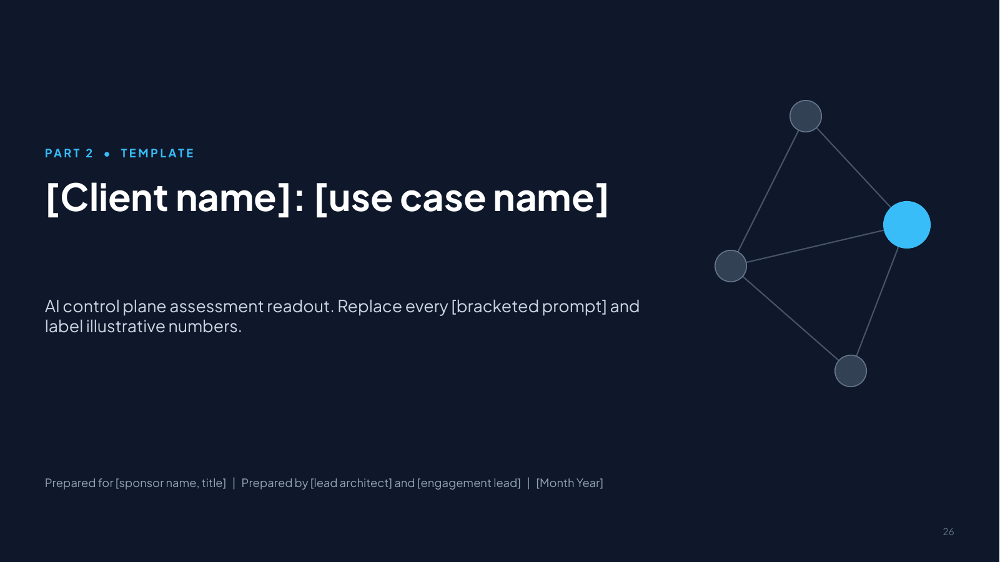
Slide text
AI control plane assessment readout. Replace every [bracketed prompt] and label illustrative numbers.
Prepared for [sponsor name, title] | Prepared by [lead architect] and [engagement lead] | [Month Year]
Speaker notes
Part 2 starts here. Build a copy of this section in your own deck for each client and use case. Each slide’s notes name the template in the guide that feeds it (T1 to T13). Leave this guidance out of the speaker notes in the deck you send to the client.
Slide 27 What this readout covers
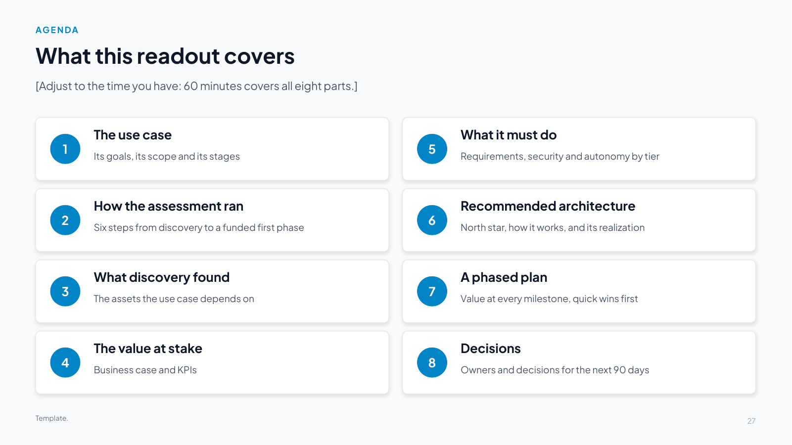
Slide text
[Adjust to the time you have: 60 minutes covers all eight parts.]
1. The use case
Its goals, its scope and its stages
2. How the assessment ran
Six steps from discovery to a funded first phase
3. What discovery found
The assets the use case depends on
4. The value at stake
Business case and KPIs
5. What it must do
Requirements, security and autonomy by tier
6. Recommended architecture
North star, how it works, and its realization
7. A phased plan
Value at every milestone, quick wins first
8. Decisions
Owners and decisions for the next 90 days
Template.
Speaker notes
Template. Replace every bracketed prompt with the client’s content and label illustrative numbers. Keep the eight parts. Shorten any of them to fit the meeting.
Slide 28 [Use case] from [trigger] to [end state]
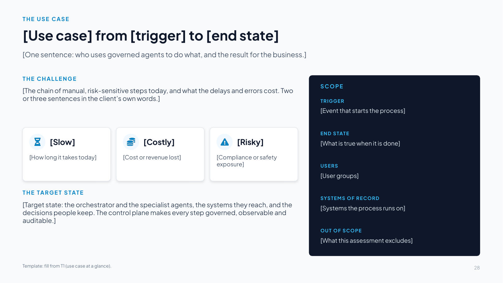
Slide text
[One sentence: who uses governed agents to do what, and the result for the business.]
THE CHALLENGE
[The chain of manual, risk-sensitive steps today, and what the delays and errors cost. Two or three sentences in the client’s own words.]
[Slow]
[How long it takes today]
[Costly]
[Cost or revenue lost]
[Risky]
[Compliance or safety exposure]
THE TARGET STATE
[Target state: the orchestrator and the specialist agents, the systems they reach, and the decisions people keep. The control plane makes every step governed, observable and auditable.]
SCOPE
TRIGGER
[Event that starts the process]
END STATE
[What is true when it is done]
USERS
[User groups]
SYSTEMS OF RECORD
[Systems the process runs on]
OUT OF SCOPE
[What this assessment excludes]
Template: fill from T1 (use case at a glance).
Speaker notes
Template. Replace every bracketed prompt with the client’s content and label illustrative numbers. Fill from template T1. Use the client’s own words for the challenge, and keep the target state to what people keep and what agents do.
Slide 29 Six steps from discovery to a funded first phase
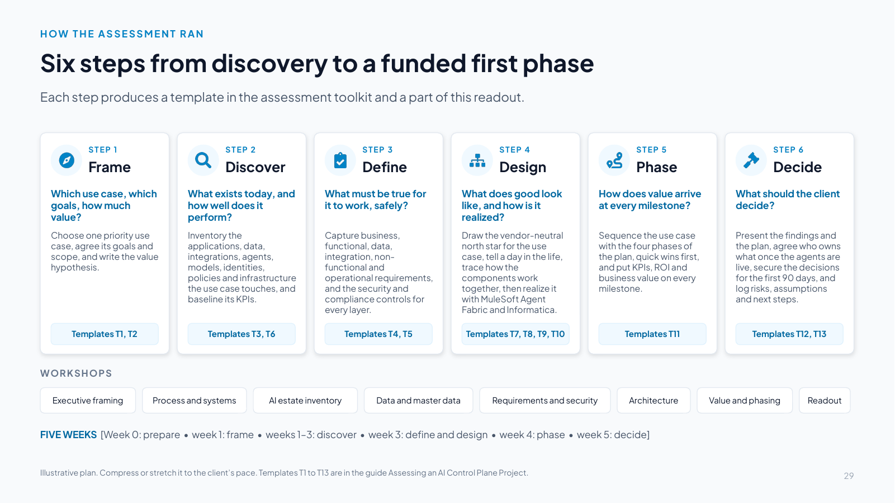
Slide text
Each step produces a template in the assessment toolkit and a part of this readout.
STEP 1
Frame
Which use case, which goals, how much value?
Choose one priority use case, agree its goals and scope, and write the value hypothesis.
Templates T1, T2
STEP 2
Discover
What exists today, and how well does it perform?
Inventory the applications, data, integrations, agents, models, identities, policies and infrastructure the use case touches, and baseline its KPIs.
Templates T3, T6
STEP 3
Define
What must be true for it to work, safely?
Capture business, functional, data, integration, non-functional and operational requirements, and the security and compliance controls for every layer.
Templates T4, T5
STEP 4
Design
What does good look like, and how is it realized?
Draw the vendor-neutral north star for the use case, tell a day in the life, trace how the components work together, then realize it with MuleSoft Agent Fabric and Informatica.
Templates T7, T8, T9, T10
STEP 5
Phase
How does value arrive at every milestone?
Sequence the use case with the four phases of the plan, quick wins first, and put KPIs, ROI and business value on every milestone.
Templates T11
STEP 6
Decide
What should the client decide?
Present the findings and the plan, agree who owns what once the agents are live, secure the decisions for the first 90 days, and log risks, assumptions and next steps.
Templates T12, T13
WORKSHOPS
Executive framing
Process and systems
AI estate inventory
Data and master data
Requirements and security
Architecture
Value and phasing
Readout
FIVE WEEKS [Week 0: prepare • week 1: frame • weeks 1–3: discover • week 3: define and design • week 4: phase • week 5: decide]
Illustrative plan. Compress or stretch it to the client’s pace. Templates T1 to T13 are in the guide Assessing an AI Control Plane Project.
Speaker notes
Template. Replace every bracketed prompt with the client’s content and label illustrative numbers. Keep the six steps. Replace the week plan with the dates you actually ran and the workshops you held.
Slide 30 What [the process] depends on today
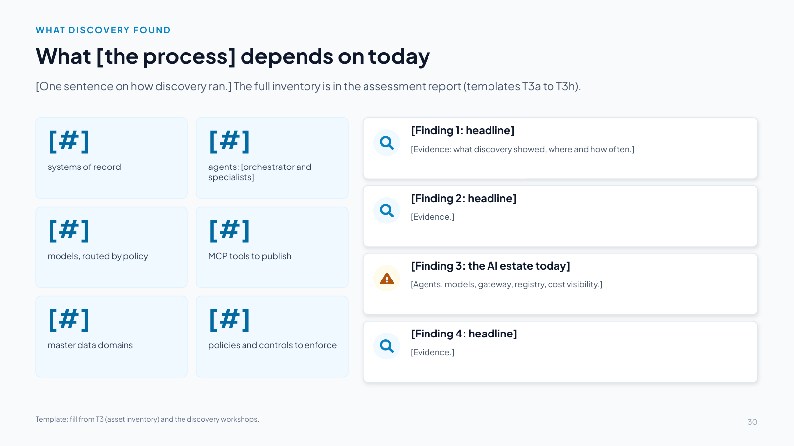
Slide text
[One sentence on how discovery ran.] The full inventory is in the assessment report (templates T3a to T3h).
[#]
systems of record
[#]
agents: [orchestrator and specialists]
[#]
models, routed by policy
[#]
MCP tools to publish
[#]
master data domains
[#]
policies and controls to enforce
[Finding 1: headline]
[Evidence: what discovery showed, where and how often.]
[Finding 2: headline]
[Evidence.]
[Finding 3: the AI estate today]
[Agents, models, gateway, registry, cost visibility.]
[Finding 4: headline]
[Evidence.]
Template: fill from T3 (asset inventory) and the discovery workshops.
Speaker notes
Template. Replace every bracketed prompt with the client’s content and label illustrative numbers. Fill the counts from the asset inventory (T3a to T3h). Keep four findings, each with evidence the client will recognize. One should describe the AI estate today (registry, gateway, cost visibility, agent quality).
Slide 31 Every asset the use case touches, by layer
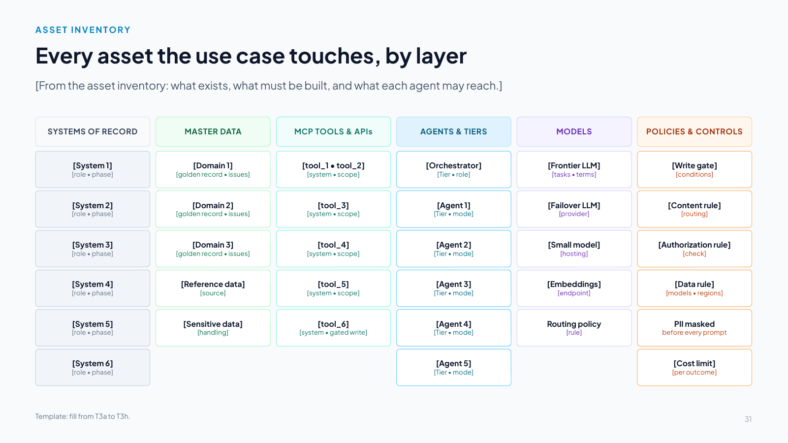
Slide text
[From the asset inventory: what exists, what must be built, and what each agent may reach.]
SYSTEMS OF RECORD
[System 1]
[role • phase]
[System 2]
[role • phase]
[System 3]
[role • phase]
[System 4]
[role • phase]
[System 5]
[role • phase]
[System 6]
[role • phase]
MASTER DATA
[Domain 1]
[golden record • issues]
[Domain 2]
[golden record • issues]
[Domain 3]
[golden record • issues]
[Reference data]
[source]
[Sensitive data]
[handling]
MCP TOOLS & APIs
[tool_1 • tool_2]
[system • scope]
[tool_3]
[system • scope]
[tool_4]
[system • scope]
[tool_5]
[system • scope]
[tool_6]
[system • gated write]
AGENTS & TIERS
[Orchestrator]
[Tier • role]
[Agent 1]
[Tier • mode]
[Agent 2]
[Tier • mode]
[Agent 3]
[Tier • mode]
[Agent 4]
[Tier • mode]
[Agent 5]
[Tier • mode]
MODELS
[Frontier LLM]
[tasks • terms]
[Failover LLM]
[provider]
[Small model]
[hosting]
[Embeddings]
[endpoint]
Routing policy
[rule]
POLICIES & CONTROLS
[Write gate]
[conditions]
[Content rule]
[routing]
[Authorization rule]
[check]
[Data rule]
[models • regions]
PII masked
before every prompt
[Cost limit]
[per outcome]
Template: fill from T3a to T3h.
Speaker notes
Template. Replace every bracketed prompt with the client’s content and label illustrative numbers. One chip per asset, with its role and the phase in which it is needed. Keep six columns; the colors match the architecture slides (systems of record grey, data green, tools teal, agents blue, models violet, policies orange).
Slide 32 Each stage of [the process] and the systems it touches
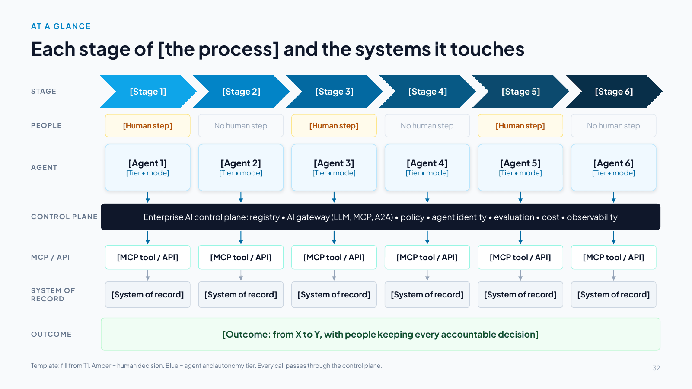
Slide text
STAGE
PEOPLE
AGENT
CONTROL PLANE
MCP / API
SYSTEM OF RECORD
OUTCOME
[Stage 1]
[Human step]
[Agent 1]
[Tier • mode]
[MCP tool / API]
[System of record]
[Stage 2]
No human step
[Agent 2]
[Tier • mode]
[MCP tool / API]
[System of record]
[Stage 3]
[Human step]
[Agent 3]
[Tier • mode]
[MCP tool / API]
[System of record]
[Stage 4]
No human step
[Agent 4]
[Tier • mode]
[MCP tool / API]
[System of record]
[Stage 5]
[Human step]
[Agent 5]
[Tier • mode]
[MCP tool / API]
[System of record]
[Stage 6]
No human step
[Agent 6]
[Tier • mode]
[MCP tool / API]
[System of record]
Enterprise AI control plane: registry • AI gateway (LLM, MCP, A2A) • policy • agent identity • evaluation • cost • observability
[Outcome: from X to Y, with people keeping every accountable decision]
Template: fill from T1. Amber = human decision. Blue = agent and autonomy tier. Every call passes through the control plane.
Speaker notes
Template. Replace every bracketed prompt with the client’s content and label illustrative numbers. Fill from template T1 (stages). For each stage give the human step (or none), the agent and its tier, the MCP tool or API, and the system of record. Delete a stage if the process has five.
Slide 33 Expected business outcomes and KPIs
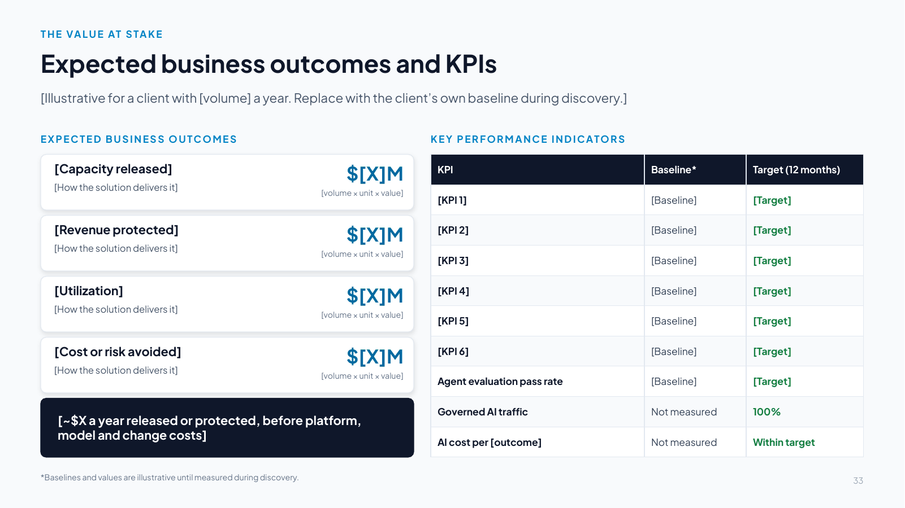
Slide text
[Illustrative for a client with [volume] a year. Replace with the client’s own baseline during discovery.]
EXPECTED BUSINESS OUTCOMES
[Capacity released]
[How the solution delivers it]
$[X]M
[volume × unit × value]
[Revenue protected]
[How the solution delivers it]
$[X]M
[volume × unit × value]
[Utilization]
[How the solution delivers it]
$[X]M
[volume × unit × value]
[Cost or risk avoided]
[How the solution delivers it]
$[X]M
[volume × unit × value]
[~$X a year released or protected, before platform, model and change costs]
KEY PERFORMANCE INDICATORS
| KPI | Baseline* | Target (12 months) |
|---|---|---|
| [KPI 1] | [Baseline] | [Target] |
| [KPI 2] | [Baseline] | [Target] |
| [KPI 3] | [Baseline] | [Target] |
| [KPI 4] | [Baseline] | [Target] |
| [KPI 5] | [Baseline] | [Target] |
| [KPI 6] | [Baseline] | [Target] |
| Agent evaluation pass rate | [Baseline] | [Target] |
| Governed AI traffic | Not measured | 100% |
| AI cost per [outcome] | Not measured | Within target |
*Baselines and values are illustrative until measured during discovery.
Speaker notes
Template. Replace every bracketed prompt with the client’s content and label illustrative numbers. Fill from templates T2 (business case) and T6 (KPIs). Show the formula under each value so finance can check it. Keep the three control-plane KPIs at the bottom of the table.
Slide 34 Requirements that shape the design
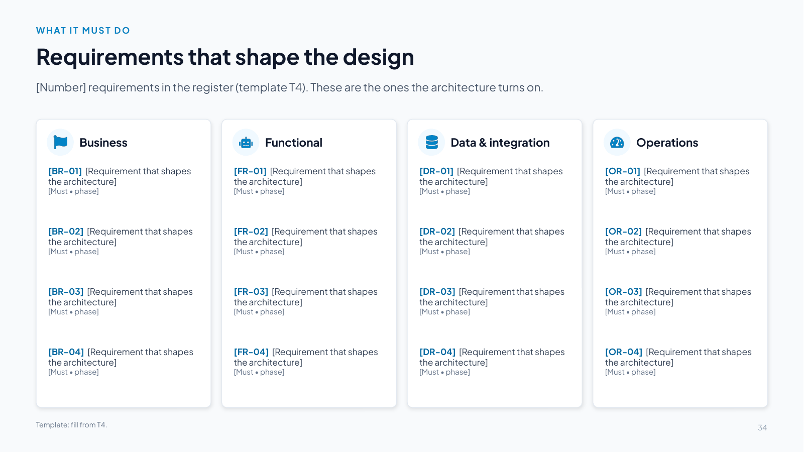
Slide text
[Number] requirements in the register (template T4). These are the ones the architecture turns on.
Business
[BR-01] [Requirement that shapes the architecture]
[Must • phase]
[BR-02] [Requirement that shapes the architecture]
[Must • phase]
[BR-03] [Requirement that shapes the architecture]
[Must • phase]
[BR-04] [Requirement that shapes the architecture]
[Must • phase]
Functional
[FR-01] [Requirement that shapes the architecture]
[Must • phase]
[FR-02] [Requirement that shapes the architecture]
[Must • phase]
[FR-03] [Requirement that shapes the architecture]
[Must • phase]
[FR-04] [Requirement that shapes the architecture]
[Must • phase]
Data & integration
[DR-01] [Requirement that shapes the architecture]
[Must • phase]
[DR-02] [Requirement that shapes the architecture]
[Must • phase]
[DR-03] [Requirement that shapes the architecture]
[Must • phase]
[DR-04] [Requirement that shapes the architecture]
[Must • phase]
Operations
[OR-01] [Requirement that shapes the architecture]
[Must • phase]
[OR-02] [Requirement that shapes the architecture]
[Must • phase]
[OR-03] [Requirement that shapes the architecture]
[Must • phase]
[OR-04] [Requirement that shapes the architecture]
[Must • phase]
Template: fill from T4.
Speaker notes
Template. Replace every bracketed prompt with the client’s content and label illustrative numbers. Pick the four requirements per column that most shape the architecture. Each keeps its ID, priority and phase from the register.
Slide 35 Security at every layer, autonomy by tier
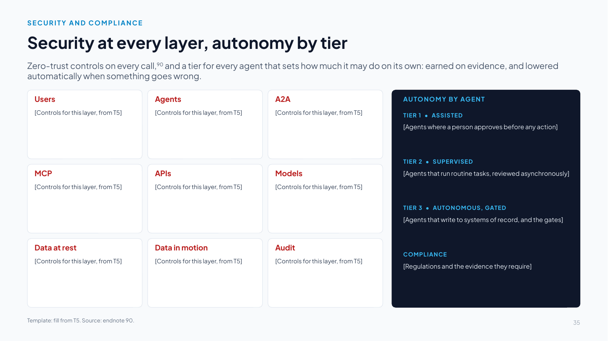
Slide text
Zero-trust controls on every call,90 and a tier for every agent that sets how much it may do on its own: earned on evidence, and lowered automatically when something goes wrong.
Users
[Controls for this layer, from T5]
Agents
[Controls for this layer, from T5]
A2A
[Controls for this layer, from T5]
MCP
[Controls for this layer, from T5]
APIs
[Controls for this layer, from T5]
Models
[Controls for this layer, from T5]
Data at rest
[Controls for this layer, from T5]
Data in motion
[Controls for this layer, from T5]
Audit
[Controls for this layer, from T5]
AUTONOMY BY AGENT
TIER 1 • ASSISTED
[Agents where a person approves before any action]
TIER 2 • SUPERVISED
[Agents that run routine tasks, reviewed asynchronously]
TIER 3 • AUTONOMOUS, GATED
[Agents that write to systems of record, and the gates]
COMPLIANCE
[Regulations and the evidence they require]
Template: fill from T5. Source: endnote 90.
Speaker notes
Template. Replace every bracketed prompt with the client’s content and label illustrative numbers. Fill from template T5, with one or two lines of controls per layer. The tiers on the right come from the agents table in T3d. Record the promotion evidence and demotion triggers for each agent and the takeover runbook for any agent at tier 3 or above. The report’s security section carries the threat coverage [48].
Slide 36 Vendor-neutral solution architecture
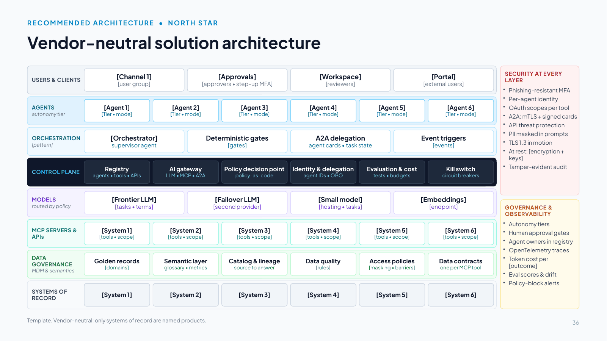
Slide text
USERS & CLIENTS
[Channel 1]
[user group]
[Approvals]
[approvers • step-up MFA]
[Workspace]
[reviewers]
[Portal]
[external users]
AGENTS
autonomy tier
[Agent 1]
[Tier • mode]
[Agent 2]
[Tier • mode]
[Agent 3]
[Tier • mode]
[Agent 4]
[Tier • mode]
[Agent 5]
[Tier • mode]
[Agent 6]
[Tier • mode]
ORCHESTRATION
[pattern]
[Orchestrator]
supervisor agent
Deterministic gates
[gates]
A2A delegation
agent cards • task state
Event triggers
[events]
CONTROL PLANE
Registry
agents • tools • APIs
AI gateway
LLM • MCP • A2A
Policy decision point
policy-as-code
Identity & delegation
agent IDs • OBO
Evaluation & cost
tests • budgets
Kill switch
circuit breakers
MODELS
routed by policy
[Frontier LLM]
[tasks • terms]
[Failover LLM]
[second provider]
[Small model]
[hosting • tasks]
[Embeddings]
[endpoint]
MCP SERVERS & APIs
[System 1]
[tools • scope]
[System 2]
[tools • scope]
[System 3]
[tools • scope]
[System 4]
[tools • scope]
[System 5]
[tools • scope]
[System 6]
[tools • scope]
DATA GOVERNANCE
MDM & semantics
Golden records
[domains]
Semantic layer
glossary • metrics
Catalog & lineage
source to answer
Data quality
[rules]
Access policies
[masking • barriers]
Data contracts
one per MCP tool
SYSTEMS OF RECORD
[System 1]
[System 2]
[System 3]
[System 4]
[System 5]
[System 6]
SECURITY AT EVERY LAYER
Phishing-resistant MFA
Per-agent identity
OAuth scopes per tool
A2A: mTLS + signed cards
API threat protection
PII masked in prompts
TLS 1.3 in motion
At rest: [encryption + keys]
Tamper-evident audit
GOVERNANCE & OBSERVABILITY
Autonomy tiers
Human approval gates
Agent owners in registry
OpenTelemetry traces
Token cost per [outcome]
Eval scores & drift
Policy-block alerts
Template. Vendor-neutral: only systems of record are named products.
Speaker notes
Template. Replace every bracketed prompt with the client’s content and label illustrative numbers. Fill from template T7 in the guide. Keep the design rule: no user or agent reaches a model or a system of record except through the control plane. Name only the systems of record. Everything else stays vendor-neutral on this slide, and the next slides show the realization. Give every agent its autonomy tier and mode (read-only, drafts, proposes, gated writes).
Slide 37 [Persona] [does what, by when]
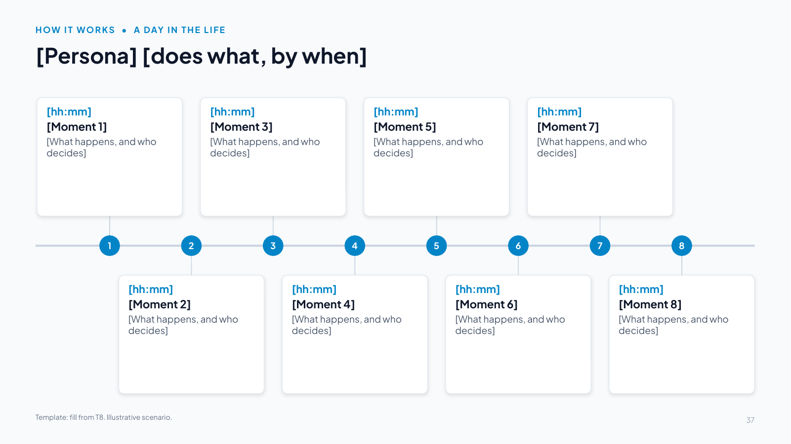
Slide text
1. [hh:mm]
[Moment 1]
[What happens, and who decides]
2. [hh:mm]
[Moment 2]
[What happens, and who decides]
3. [hh:mm]
[Moment 3]
[What happens, and who decides]
4. [hh:mm]
[Moment 4]
[What happens, and who decides]
5. [hh:mm]
[Moment 5]
[What happens, and who decides]
6. [hh:mm]
[Moment 6]
[What happens, and who decides]
7. [hh:mm]
[Moment 7]
[What happens, and who decides]
8. [hh:mm]
[Moment 8]
[What happens, and who decides]
Template: fill from T8. Illustrative scenario.
Speaker notes
Template. Replace every bracketed prompt with the client’s content and label illustrative numbers. Fill from template T8. Eight moments from trigger to end state. Name the persona and make every human decision visible.
Slide 38 How the components work together in [persona]’s day
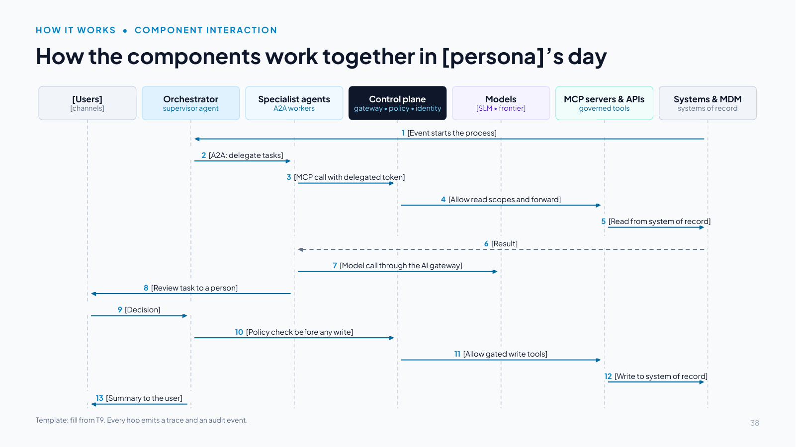
Slide text
[Users]
[channels]
Orchestrator
supervisor agent
Specialist agents
A2A workers
Control plane
gateway • policy • identity
Models
[SLM • frontier]
MCP servers & APIs
governed tools
Systems & MDM
systems of record
1 [Event starts the process]
2 [A2A: delegate tasks]
3 [MCP call with delegated token]
4 [Allow read scopes and forward]
5 [Read from system of record]
6 [Result]
7 [Model call through the AI gateway]
8 [Review task to a person]
9 [Decision]
10 [Policy check before any write]
11 [Allow gated write tools]
12 [Write to system of record]
13 [Summary to the user]
Template: fill from T9. Every hop emits a trace and an audit event.
Speaker notes
Template. Replace every bracketed prompt with the client’s content and label illustrative numbers. Fill from template T9. Number the steps so they follow the day in the life. Show every policy check before a write and every human decision.
Slide 39 Realized with MuleSoft Agent Fabric and Informatica
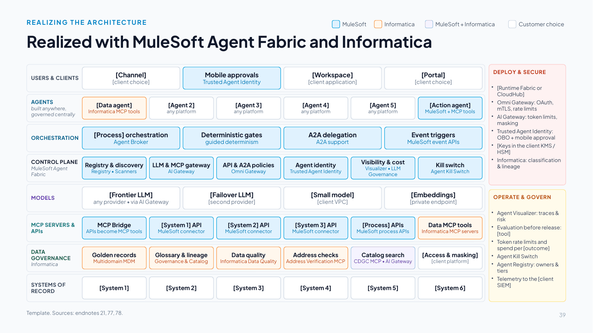
Slide text
MuleSoft
Informatica
MuleSoft + Informatica
Customer choice
USERS & CLIENTS
[Channel]
[client choice]
Mobile approvals
Trusted Agent Identity
[Workspace]
[client application]
[Portal]
[client choice]
AGENTS
built anywhere, governed centrally
[Data agent]
Informatica MCP tools
[Agent 2]
any platform
[Agent 3]
any platform
[Agent 4]
any platform
[Agent 5]
any platform
[Action agent]
MuleSoft + MCP tools
ORCHESTRATION
[Process] orchestration
Agent Broker
Deterministic gates
guided determinism
A2A delegation
A2A support
Event triggers
MuleSoft event APIs
CONTROL PLANE
MuleSoft Agent Fabric
Registry & discovery
Registry • Scanners
LLM & MCP gateway
AI Gateway
API & A2A policies
Omni Gateway
Agent identity
Trusted Agent Identity
Visibility & cost
Visualizer • LLM Governance
Kill switch
Agent Kill Switch
MODELS
[Frontier LLM]
any provider • via AI Gateway
[Failover LLM]
[second provider]
[Small model]
[client VPC]
[Embeddings]
[private endpoint]
MCP SERVERS & APIs
MCP Bridge
APIs become MCP tools
[System 1] API
MuleSoft connector
[System 2] API
MuleSoft connector
[System 3] API
MuleSoft connector
[Process] APIs
MuleSoft process APIs
Data MCP tools
Informatica MCP servers
DATA GOVERNANCE
Informatica
Golden records
Multidomain MDM
Glossary & lineage
Governance & Catalog
Data quality
Informatica Data Quality
Address checks
Address Verification MCP
Catalog search
CDGC MCP • AI Gateway
[Access & masking]
[client platform]
SYSTEMS OF RECORD
[System 1]
[System 2]
[System 3]
[System 4]
[System 5]
[System 6]
DEPLOY & SECURE
[Runtime Fabric or CloudHub]
Omni Gateway: OAuth, mTLS, rate limits
AI Gateway: token limits, masking
Trusted Agent Identity: OBO + mobile approval
[Keys in the client KMS / HSM]
Informatica: classification & lineage
OPERATE & GOVERN
Agent Visualizer: traces & risk
Evaluation before release: [tool]
Token rate limits and spend per [outcome]
Agent Kill Switch
Agent Registry: owners & tiers
Telemetry to the [client SIEM]
Speaker notes
Template. Replace every bracketed prompt with the client’s content and label illustrative numbers. Fill from template T10 in the guide. The MuleSoft Agent Fabric and Informatica boxes are pre-filled because they do not change from client to client. Replace the bracketed boxes (the client’s channels, agents, models and systems) and delete any MuleSoft or Informatica box the use case does not need. Keep the vendor legend. Before presenting, confirm MuleSoft connector coverage for the client’s systems, and map each data need to an Informatica MCP server or an API [77].
Slide 40 Every component and its capability
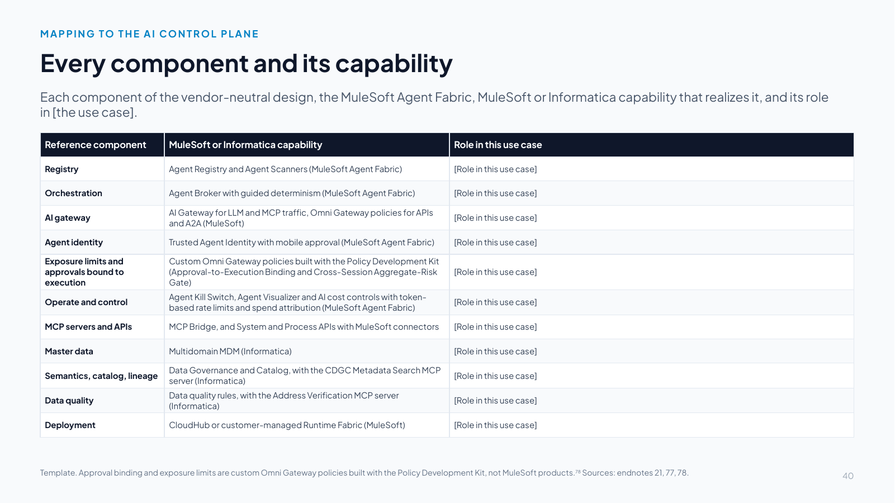
Slide text
Each component of the vendor-neutral design, the MuleSoft Agent Fabric, MuleSoft or Informatica capability that realizes it, and its role in [the use case].
| Reference component | MuleSoft or Informatica capability | Role in this use case |
|---|---|---|
| Registry | Agent Registry and Agent Scanners (MuleSoft Agent Fabric) | [Role in this use case] |
| Orchestration | Agent Broker with guided determinism (MuleSoft Agent Fabric) | [Role in this use case] |
| AI gateway | AI Gateway for LLM and MCP traffic, Omni Gateway policies for APIs and A2A (MuleSoft) | [Role in this use case] |
| Agent identity | Trusted Agent Identity with mobile approval (MuleSoft Agent Fabric) | [Role in this use case] |
| Exposure limits and approvals bound to execution | Custom Omni Gateway policies built with the Policy Development Kit (Approval-to-Execution Binding and Cross-Session Aggregate-Risk Gate) | [Role in this use case] |
| Operate and control | Agent Kill Switch, Agent Visualizer and AI cost controls with token-based rate limits and spend attribution (MuleSoft Agent Fabric) | [Role in this use case] |
| MCP servers and APIs | MCP Bridge, and System and Process APIs with MuleSoft connectors | [Role in this use case] |
| Master data | Multidomain MDM (Informatica) | [Role in this use case] |
| Semantics, catalog, lineage | Data Governance and Catalog, with the CDGC Metadata Search MCP server (Informatica) | [Role in this use case] |
| Data quality | Data quality rules, with the Address Verification MCP server (Informatica) | [Role in this use case] |
| Deployment | CloudHub or customer-managed Runtime Fabric (MuleSoft) | [Role in this use case] |
Template. Approval binding and exposure limits are custom Omni Gateway policies built with the Policy Development Kit, not MuleSoft products.78 Sources: endnotes 21, 77, 78.
Speaker notes
Template. Replace every bracketed prompt with the client’s content and label illustrative numbers. Fill from template T10: write the role each capability plays in this use case and delete the rows the use case does not need. Name the tool that will run the evaluation suites. Any evaluation tool works, such as Amazon Bedrock AgentCore Evaluations or ASSERT [62][63].
Slide 41 Coexisting with other agent control planes
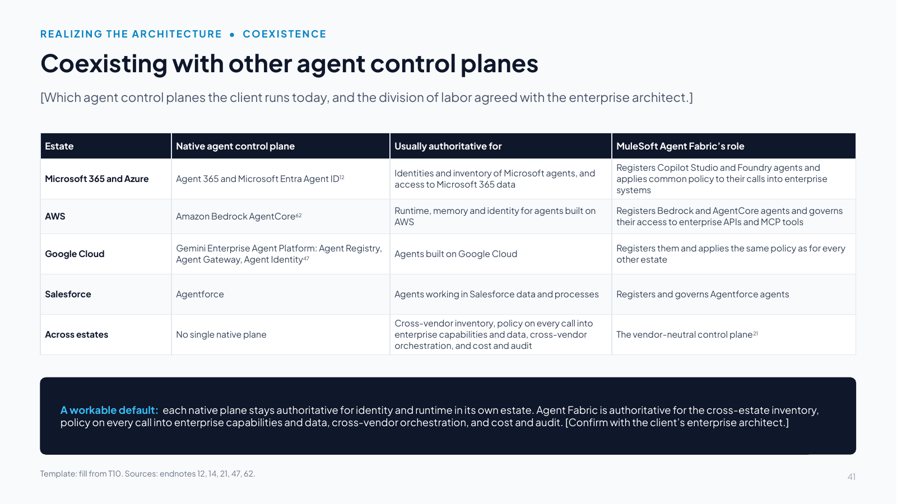
Slide text
[Which agent control planes the client runs today, and the division of labor agreed with the enterprise architect.]
| Estate | Native agent control plane | Usually authoritative for | MuleSoft Agent Fabric’s role |
|---|---|---|---|
| Microsoft 365 and Azure | Agent 365 and Microsoft Entra Agent ID12 | Identities and inventory of Microsoft agents, and access to Microsoft 365 data | Registers Copilot Studio and Foundry agents and applies common policy to their calls into enterprise systems |
| AWS | Amazon Bedrock AgentCore62 | Runtime, memory and identity for agents built on AWS | Registers Bedrock and AgentCore agents and governs their access to enterprise APIs and MCP tools |
| Google Cloud | Gemini Enterprise Agent Platform: Agent Registry, Agent Gateway, Agent Identity47 | Agents built on Google Cloud | Registers them and applies the same policy as for every other estate |
| Salesforce | Agentforce | Agents working in Salesforce data and processes | Registers and governs Agentforce agents |
| Across estates | No single native plane | Cross-vendor inventory, policy on every call into enterprise capabilities and data, cross-vendor orchestration, and cost and audit | The vendor-neutral control plane21 |
A workable default: each native plane stays authoritative for identity and runtime in its own estate. Agent Fabric is authoritative for the cross-estate inventory, policy on every call into enterprise capabilities and data, cross-vendor orchestration, and cost and audit. [Confirm with the client’s enterprise architect.]
Template: fill from T10. Sources: endnotes 12, 14, 21, 47, 62.
Speaker notes
Template. Replace every bracketed prompt with the client’s content and label illustrative numbers. Fill from template T10 (coexisting control planes). Keep the estates the client runs and delete the others. The rows are pre-filled because the vendors’ planes do not change from client to client [12][62][47]. Agree the division of labor with the enterprise architect and write it in the band [21][14].
Slide 42 The north star, realized with MuleSoft Agent Fabric and Informatica
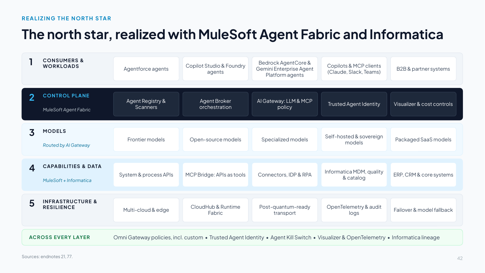
Slide text
1. CONSUMERS & WORKLOADS
Agentforce agents
Copilot Studio & Foundry agents
Bedrock AgentCore & Gemini Enterprise Agent Platform agents
Copilots & MCP clients (Claude, Slack, Teams)
B2B & partner systems
2. CONTROL PLANE
MuleSoft Agent Fabric
Agent Registry & Scanners
Agent Broker orchestration
AI Gateway: LLM & MCP policy
Trusted Agent Identity
Visualizer & cost controls
3. MODELS
Routed by AI Gateway
Frontier models
Open-source models
Specialized models
Self-hosted & sovereign models
Packaged SaaS models
4. CAPABILITIES & DATA
MuleSoft + Informatica
System & process APIs
MCP Bridge: APIs as tools
Connectors, IDP & RPA
Informatica MDM, quality & catalog
ERP, CRM & core systems
5. INFRASTRUCTURE & RESILIENCE
Multi-cloud & edge
CloudHub & Runtime Fabric
Post-quantum-ready transport
OpenTelemetry & audit logs
Failover & model fallback
ACROSS EVERY LAYER
Omni Gateway policies, incl. custom • Trusted Agent Identity • Agent Kill Switch • Visualizer & OpenTelemetry • Informatica lineage
Speaker notes
This slide shows the north star realized: every layer of the vendor-neutral architecture maps to a MuleSoft or Informatica capability. The control plane (layer 2) sits between consumer workloads and the models and data beneath, and applies identity, policy, routing, cost controls and audit to every agent-to-model and agent-to-tool call.
How the layers map:
- Consumers and workloads: agents from any platform (Agentforce, Copilot Studio and Foundry, Bedrock AgentCore, Gemini Enterprise Agent Platform), copilots and MCP clients such as Claude, Slack and Teams, and B2B systems, discovered by Agent Scanners and registered in Agent Registry [21].
- Control plane, MuleSoft Agent Fabric: Agent Registry and Scanners (inventory), Agent Broker (orchestration), AI Gateway (one policy point for LLM and MCP traffic), Trusted Agent Identity, and Agent Visualizer and AI cost controls [21].
- Models: five model classes, routed per task by AI Gateway's intelligent model routing, with token-based rate limits and spend attribution [1][21].
- Capabilities and data: MuleSoft system and process APIs, MCP Bridge and connectors with IDP and RPA, plus Informatica for master data, data quality, catalog and lineage (with data services exposed to agents through Informatica's MCP servers) and Salesforce Data 360 for customer data [21][77].
- Infrastructure and resilience: multi-cloud and edge, CloudHub or customer-managed Runtime Fabric, post-quantum-ready transport, OpenTelemetry and audit logs, and failover.
Across every layer: Omni Gateway policies (including custom ones), Trusted Agent Identity, the Agent Kill Switch, Agent Visualizer and OpenTelemetry traces, and Informatica governance and lineage.
Design rule: nothing in layer 1 calls layer 3 or 4 directly. Every agent-to-model and agent-to-tool call traverses layer 2. In operational technology the rule extends one layer down: no agent reaches a control system except through a governed conduit, and independent safety systems sit beneath everything (reference use case 3 applies this to a gas pipeline operator).
Slide 43 The platform and the use case, phased together
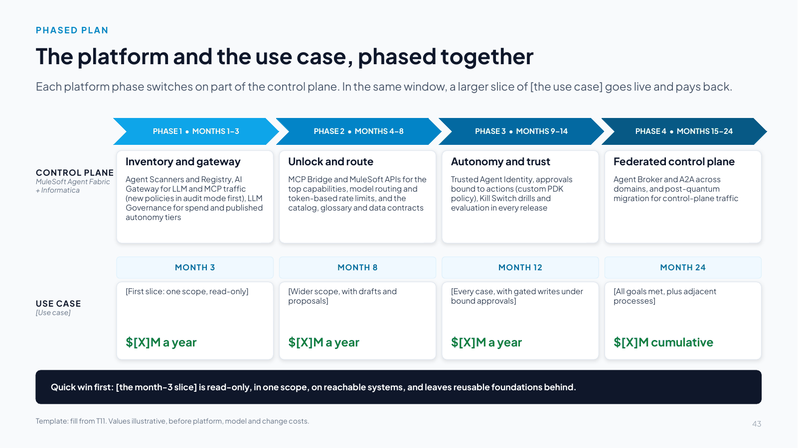
Slide text
Each platform phase switches on part of the control plane. In the same window, a larger slice of [the use case] goes live and pays back.
CONTROL PLANE
MuleSoft Agent Fabric + Informatica
USE CASE
[Use case]
PHASE 1 • MONTHS 1–3
Inventory and gateway
Agent Scanners and Registry, AI Gateway for LLM and MCP traffic (new policies in audit mode first), LLM Governance for spend and published autonomy tiers
PHASE 2 • MONTHS 4–8
Unlock and route
MCP Bridge and MuleSoft APIs for the top capabilities, model routing and token-based rate limits, and the catalog, glossary and data contracts
PHASE 3 • MONTHS 9–14
Autonomy and trust
Trusted Agent Identity, approvals bound to actions (custom PDK policy), Kill Switch drills and evaluation in every release
PHASE 4 • MONTHS 15–24
Federated control plane
Agent Broker and A2A across domains, and post-quantum migration for control-plane traffic
MONTH 3
[First slice: one scope, read-only]
$[X]M a year
MONTH 8
[Wider scope, with drafts and proposals]
$[X]M a year
MONTH 12
[Every case, with gated writes under bound approvals]
$[X]M a year
MONTH 24
[All goals met, plus adjacent processes]
$[X]M cumulative
Quick win first: [the month-3 slice] is read-only, in one scope, on reachable systems, and leaves reusable foundations behind.
Template: fill from T11. Values illustrative, before platform, model and change costs.
Speaker notes
Template. Replace every bracketed prompt with the client’s content and label illustrative numbers. Fill from template T11. The top lane is pre-filled with the four platform phases. Fill the bottom lane with the use-case milestones and their run-rate value. The month-3 slice must pass the quick-win test in the guide.
Slide 44 How value builds across the four phases
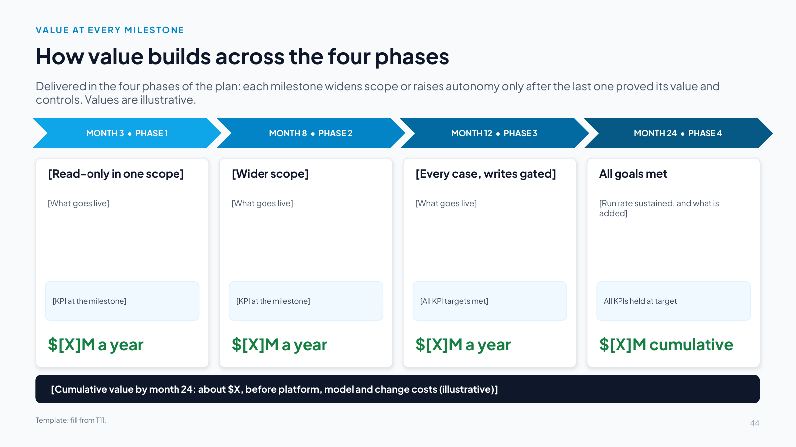
Slide text
Delivered in the four phases of the plan: each milestone widens scope or raises autonomy only after the last one proved its value and controls. Values are illustrative.
MONTH 3 • PHASE 1
[Read-only in one scope]
[What goes live]
[KPI at the milestone]
$[X]M a year
MONTH 8 • PHASE 2
[Wider scope]
[What goes live]
[KPI at the milestone]
$[X]M a year
MONTH 12 • PHASE 3
[Every case, writes gated]
[What goes live]
[All KPI targets met]
$[X]M a year
MONTH 24 • PHASE 4
All goals met
[Run rate sustained, and what is added]
All KPIs held at target
$[X]M cumulative
[Cumulative value by month 24: about $X, before platform, model and change costs (illustrative)]
Template: fill from T11.
Speaker notes
Template. Replace every bracketed prompt with the client’s content and label illustrative numbers. Fill from template T11. Show the formula for each value in the notes so finance can check it.
Slide 45 KPIs at every milestone
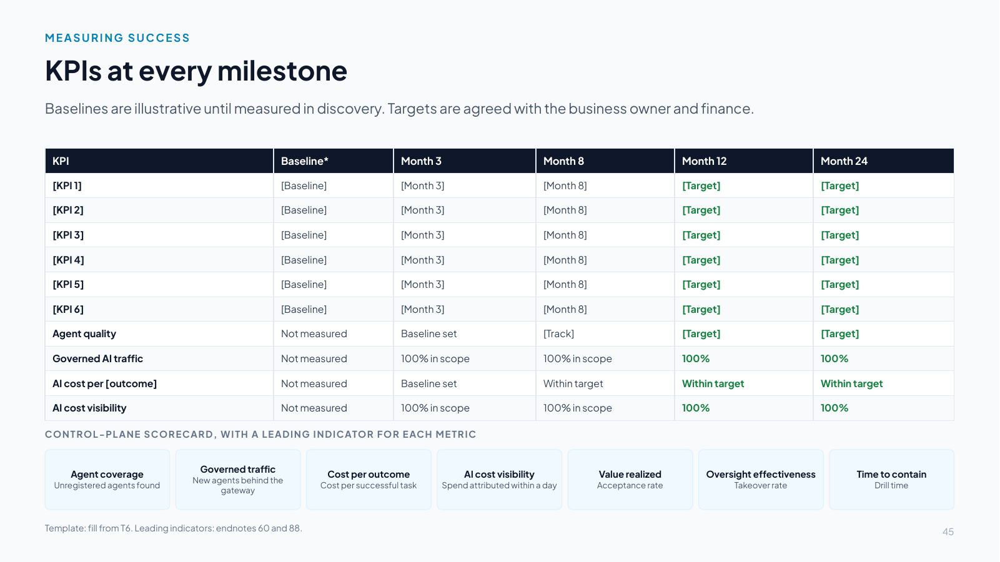
Slide text
Baselines are illustrative until measured in discovery. Targets are agreed with the business owner and finance.
| KPI | Baseline* | Month 3 | Month 8 | Month 12 | Month 24 |
|---|---|---|---|---|---|
| [KPI 1] | [Baseline] | [Month 3] | [Month 8] | [Target] | [Target] |
| [KPI 2] | [Baseline] | [Month 3] | [Month 8] | [Target] | [Target] |
| [KPI 3] | [Baseline] | [Month 3] | [Month 8] | [Target] | [Target] |
| [KPI 4] | [Baseline] | [Month 3] | [Month 8] | [Target] | [Target] |
| [KPI 5] | [Baseline] | [Month 3] | [Month 8] | [Target] | [Target] |
| [KPI 6] | [Baseline] | [Month 3] | [Month 8] | [Target] | [Target] |
| Agent quality | Not measured | Baseline set | [Track] | [Target] | [Target] |
| Governed AI traffic | Not measured | 100% in scope | 100% in scope | 100% | 100% |
| AI cost per [outcome] | Not measured | Baseline set | Within target | Within target | Within target |
| AI cost visibility | Not measured | 100% in scope | 100% in scope | 100% | 100% |
CONTROL-PLANE SCORECARD, WITH A LEADING INDICATOR FOR EACH METRIC
Agent coverage
Unregistered agents found
Governed traffic
New agents behind the gateway
Cost per outcome
Cost per successful task
AI cost visibility
Spend attributed within a day
Value realized
Acceptance rate
Oversight effectiveness
Takeover rate
Time to contain
Drill time
Template: fill from T6. Leading indicators: endnotes 60 and 88.
Speaker notes
Slide 46 Value arrives at every milestone
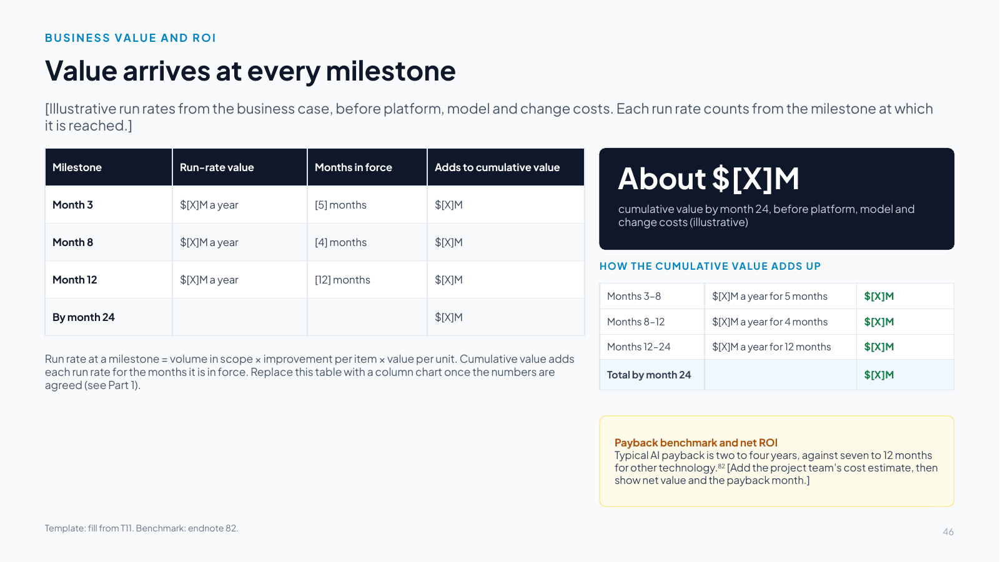
Slide text
[Illustrative run rates from the business case, before platform, model and change costs. Each run rate counts from the milestone at which it is reached.]
| Milestone | Run-rate value | Months in force | Adds to cumulative value |
|---|---|---|---|
| Month 3 | $[X]M a year | [5] months | $[X]M |
| Month 8 | $[X]M a year | [4] months | $[X]M |
| Month 12 | $[X]M a year | [12] months | $[X]M |
| By month 24 | $[X]M |
Run rate at a milestone = volume in scope × improvement per item × value per unit. Cumulative value adds each run rate for the months it is in force. Replace this table with a column chart once the numbers are agreed (see Part 1).
About $[X]M
cumulative value by month 24, before platform, model and change costs (illustrative)
HOW THE CUMULATIVE VALUE ADDS UP
| Months 3–8 | $[X]M a year for 5 months | $[X]M |
|---|---|---|
| Months 8–12 | $[X]M a year for 4 months | $[X]M |
| Months 12–24 | $[X]M a year for 12 months | $[X]M |
| Total by month 24 | $[X]M |
Payback benchmark and net ROI
Typical AI payback is two to four years, against seven to 12 months for other technology.82 [Add the project team’s cost estimate, then show net value and the payback month.]
Template: fill from T11. Benchmark: endnote 82.
Speaker notes
Template. Replace every bracketed prompt with the client’s content and label illustrative numbers. Fill from template T11 and agree the numbers with the client’s finance partner. Keep values illustrative until the baseline is measured. Never add up use cases from different businesses. Keep the benchmark in the amber box: typical AI payback is two to four years [82].
Slide 47 Who owns what once the agents are live
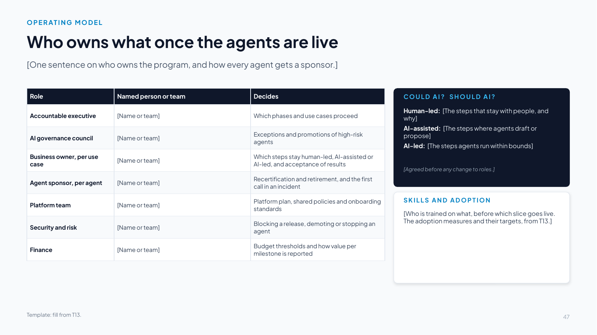
Slide text
[One sentence on who owns the program, and how every agent gets a sponsor.]
| Role | Named person or team | Decides |
|---|---|---|
| Accountable executive | [Name or team] | Which phases and use cases proceed |
| AI governance council | [Name or team] | Exceptions and promotions of high-risk agents |
| Business owner, per use case | [Name or team] | Which steps stay human-led, AI-assisted or AI-led, and acceptance of results |
| Agent sponsor, per agent | [Name or team] | Recertification and retirement, and the first call in an incident |
| Platform team | [Name or team] | Platform plan, shared policies and onboarding standards |
| Security and risk | [Name or team] | Blocking a release, demoting or stopping an agent |
| Finance | [Name or team] | Budget thresholds and how value per milestone is reported |
COULD AI? SHOULD AI?
Human-led: [The steps that stay with people, and why]
AI-assisted: [The steps where agents draft or propose]
AI-led: [The steps agents run within bounds]
[Agreed before any change to roles.]
SKILLS AND ADOPTION
[Who is trained on what, before which slice goes live. The adoption measures and their targets, from T13.]
Template: fill from T13.
Speaker notes
Template. Replace every bracketed prompt with the client’s content and label illustrative numbers. Fill from template T13: a named person or team for every role, a sponsor for every agent, the work modes from T1 (could AI, should AI), the training plan, and adoption measures that track value and acceptance instead of usage.
Slide 48 Decisions for the next 90 days
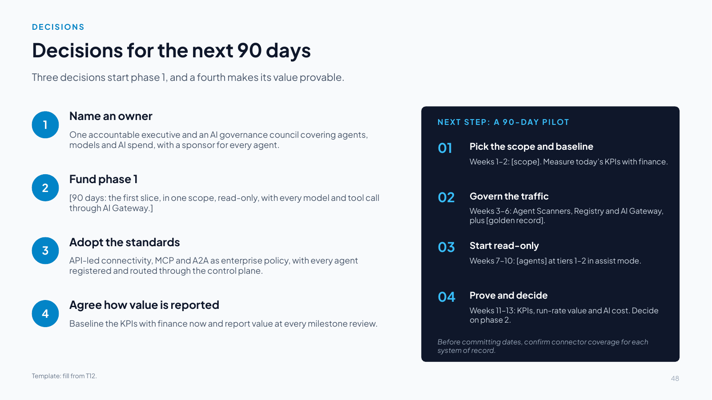
Slide text
Three decisions start phase 1, and a fourth makes its value provable.
1. Name an owner
One accountable executive and an AI governance council covering agents, models and AI spend, with a sponsor for every agent.
2. Fund phase 1
[90 days: the first slice, in one scope, read-only, with every model and tool call through AI Gateway.]
3. Adopt the standards
API-led connectivity, MCP and A2A as enterprise policy, with every agent registered and routed through the control plane.
4. Agree how value is reported
Baseline the KPIs with finance now and report value at every milestone review.
NEXT STEP: A 90-DAY PILOT
01. Pick the scope and baseline
Weeks 1–2: [scope]. Measure today’s KPIs with finance.
02. Govern the traffic
Weeks 3–6: Agent Scanners, Registry and AI Gateway, plus [golden record].
03. Start read-only
Weeks 7–10: [agents] at tiers 1–2 in assist mode.
04. Prove and decide
Weeks 11–13: KPIs, run-rate value and AI cost. Decide on phase 2.
Before committing dates, confirm connector coverage for each system of record.
Template: fill from T12.
Speaker notes
Template. Replace every bracketed prompt with the client’s content and label illustrative numbers. Fill from template T12. Keep the three standard decisions and adapt the second to the client’s first slice. The 90-day plan on the right follows the same four steps for every client.
Slide 49 Standards and regulation dates
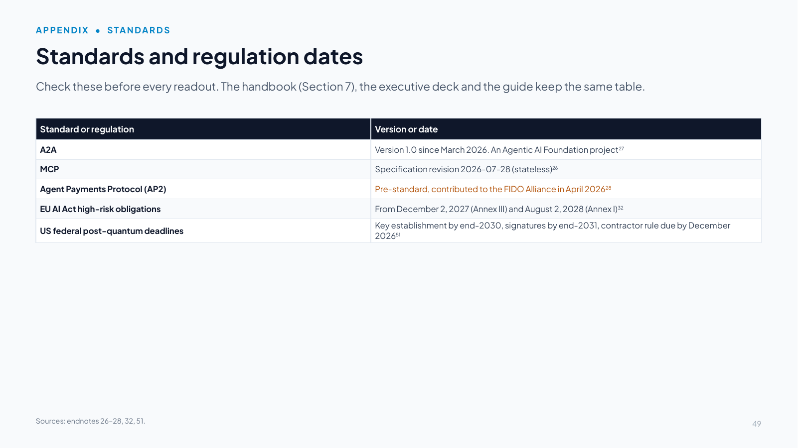
Slide text
Check these before every readout. The handbook (Section 7), the executive deck and the guide keep the same table.
| Standard or regulation | Version or date |
|---|---|
| A2A | Version 1.0 since March 2026. An Agentic AI Foundation project27 |
| MCP | Specification revision 2026-07-28 (stateless)26 |
| Agent Payments Protocol (AP2) | Pre-standard, contributed to the FIDO Alliance in April 202628 |
| EU AI Act high-risk obligations | From December 2, 2027 (Annex III) and August 2, 2028 (Annex I)32 |
| US federal post-quantum deadlines | Key establishment by end-2030, signatures by end-2031, contractor rule due by December 202651 |
Speaker notes
This slide collects the protocol versions and regulation dates that change from one edition to the next. Update it, the guide’s table (Section 5) and the handbook’s table (Section 7) together at each edition, and say what changed. Since January 2026, for example, A2A reached version 1.0 [27] and MCP became stateless [26]. AP2 is pre-standard [28].
Sources, notices and the author
The client deck ends with its sources, its notices and a note about the author. On this site they are in the guide’s Appendix D (sources), Appendix E (notices, including the additional permissions) and Appendix F (about the author).